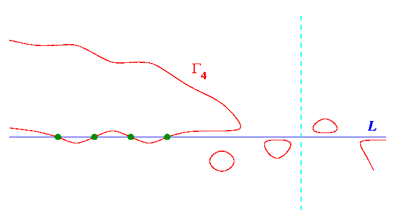

Harnack's Construction
: Quartic

The
Harnack quartic
consists of four ovals, with none nested.
One oval meets the fixed
line
in four points.
For the next step, let the vertical
line
be the line at infinity.